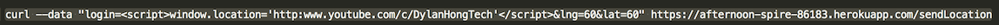
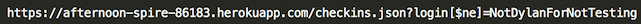
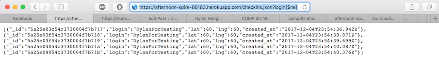

1. Cross-Site Scripting
Found: When you send javascript to the server, you can redirect people to any website when they try to access the url that displays the database info
Severity: High. This could allow anybody to take complete control over where your website leads people to.
Description: I found this by using a curl command that had javascript in it.

The javascript redirects a anybody trying to view the website to youtube.com/c/dylanhongtech.
Proof: Before XXS

After XSS
Resolution: Make sure you write functions or use functions that strip the user input of any special characters.
2. MongoDB Injection Attack
Found: When typing in the URL for the checkins list, you should be able to find all of the database entries pertaining to a certain user. However, when you use mongo injection, you can see the entire database.
Severity: Medium. If your database were filled with more sensitive information , I would give this a high, but you don't have legitamate user information in the database.
Description: I found this by entering an addition to the login part of a query string

Proof: Output of the entire database when user is different

Resolution: Here you would also want to parse the query string for any extraneous input. This would not allow it to access the MonogoDB commands that allow this to happen
3. Curl Spamming
Found: This is found through sending data into the mongodb.
Severity: Low. This might not be an issue until your database becomes full. Additionally, I think you would just be charged money. I stopped my spam because I was afraid of having the developer get charged for exceeding the storage limits. But if you have a cap, this would stop your database from being able to store any more information which could stop the programs from functioning properly.
Description: I run a command that inserts large chunks of text into the mongodb with an infinite loop.

Running this loop added around 1mb to the database every 15 seconds. This could fill up somebody's server if left up for a long time. Free Mongodb accounts get 512mb of storage, so I can fill this up within 2 hours and 8 minutes.
Proof: Size of the mongoDB after running the script for about 20 minutes
Resolution: You would want to think about disallowing a user from sending their location to every 30 seconds or so. Seeing as this is location data, there is no need for second by second updates. Also, you sould cap the lengths of the login field.